福岡のLLMO対策会社10選｜費用相場と失敗しない選び方を比較

福岡でLLMO会社を探すときは、単に「AI検索対策に対応しているか」だけでなく、福岡市の都市型商圏、北九州の産業型商圏、県内広域の集客導線まで踏まえて提案できるかを確認することが大切です。福岡はスタートアップ、観光、店舗集客が強い一方で、製造業、物流、医療・福祉のような業種も存在感があり、地域特性に合った設計力が問われます。
この記事では、福岡で依頼しやすいLLMO会社を10社整理したうえで、比較ポイント、費用相場、よくある質問までまとめて解説します。福岡県内の中小企業、店舗、BtoB企業が自社に合う支援先を選ぶときの判断材料として活用してください。
まずはLLMO対策の基本を押さえたい方は基礎記事から、地域比較まで見たい方は東京の比較記事や大阪の比較記事も参考になります。現状把握から始めたい場合は無料LLMO診断も活用できます。
目次

福岡でおすすめのLLMO会社10選
福岡でLLMO会社を選ぶときは、単に「AI検索対策をやっています」と書いてあるかだけで判断しないことが大切です。福岡市の都市型集客に強いのか、北九州の産業集積エリアも理解できるのか、さらに制作や改善まで実行できるのかで、実際の成果は大きく変わります。
ここでは、福岡で依頼を検討しやすい会社を中心に、全国対応の有力会社も含めて10社を紹介します。順位は絶対的な優劣ではなく、福岡企業から見た依頼のしやすさ、公開情報の明確さ、支援範囲の広さを踏まえた実務的な並びです。以下は2026年4月15日時点で公式サイト上の公開情報が確認できる会社を整理した一覧です。
| 会社名 | 主な特徴 | 向いている会社 |
|---|---|---|
| 株式会社クリエル | 福岡拠点でLLMO、AIO、GEOまで案内 | 福岡市内中心に実践寄りの支援を受けたい会社 |
| 株式会社Soelu | 制作、SEO、AIO/LLMOを一体で相談しやすい | 既存サイトを活かしながら改善したい会社 |
| ホドック株式会社 | デザインとデジタルマーケティングを横断 | ブランド表現まで含めて整えたい会社 |
| 株式会社LIH | GEO診断から入りやすい | 小さく始めて優先順位を整理したい会社 |
| メディアクロス株式会社 | ホームページ品質とSEOを土台にLLMO対応 | 構造から見直したい会社 |
| 株式会社セブンアイズ | 技術寄りの構造改善やFAQ整備に強い | 裏側の整備まで重視したい会社 |
| ウェブココル株式会社 | 地域特化のLLMOコンサルティング | 地域集客や店舗型ビジネスの会社 |
| 福岡ECサイト株式会社 | ECとAI検索対策をまとめて相談しやすい | 通販や物販で比較導線を強化したい会社 |
| 株式会社メディアリーチ | SEOとLLMOを統合した専門支援 | BtoBやSaaSで本格伴走を求める会社 |
| 株式会社ジオコード | SEO、制作、実装まで含めて支援範囲が広い | 体制や実装力を重視したい会社 |
株式会社AIMAは福岡本社の会社ではありませんが、大阪市北区を拠点に全国対応でLLMO支援を提供しています。月額5万円・初期費用なし・1ヶ月単位で始められ、比較記事、FAQ、第三者評価設計まで含めてAIに引用されやすい導線づくりを支援しています。
1. 株式会社クリエル
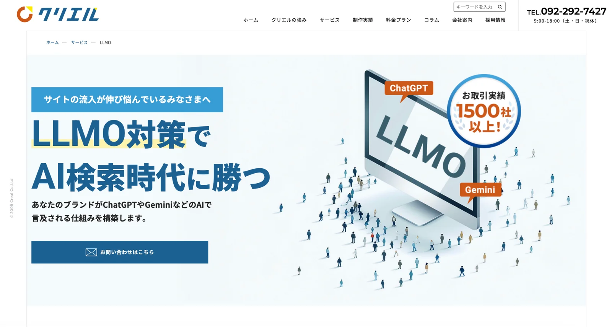
株式会社クリエルは、福岡を拠点にWebマーケティング全般を支援している会社です。公式のLLMOページでは、LLMOに加えてAIO、GEO、ChatGPT、Gemini、Perplexityといったキーワードまで明示しており、AI検索時代を前提にした集客支援をサービス化していることがわかります。
福岡企業にとっては、地場の相談しやすさを持ちながら、説明だけで終わらず実践寄りの支援を受けやすい点が魅力です。福岡市内の都市型商圏で比較されやすい会社や、まずは地域事情を理解したパートナーを探したい会社に向いています。
2. 株式会社Soelu
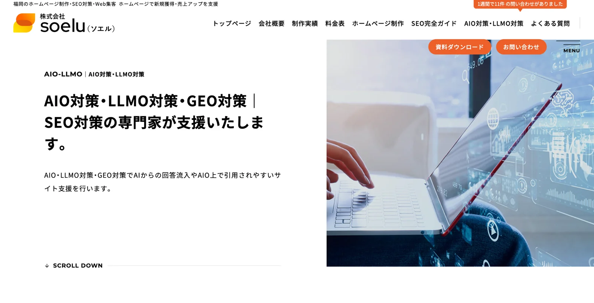
株式会社Soeluは、福岡のホームページ制作、SEO、Web集客を土台に、AIO対策、LLMO対策、GEO対策まで案内している会社です。従来のSEO支援からAI検索対策へ自然に拡張しているため、既存サイトを活かしながら改善したい会社と相性がよいです。
ゼロからすべて作り直すというより、今あるホームページや集客導線を整理しつつ、生成AIに引用されやすい形へ寄せたい会社に向いています。制作と集客改善をまとめて相談しやすい福岡の選択肢として見やすい会社です。
参考：株式会社Soelu｜福岡のAIO対策・LLMO対策・GEO対策
3. ホドック株式会社
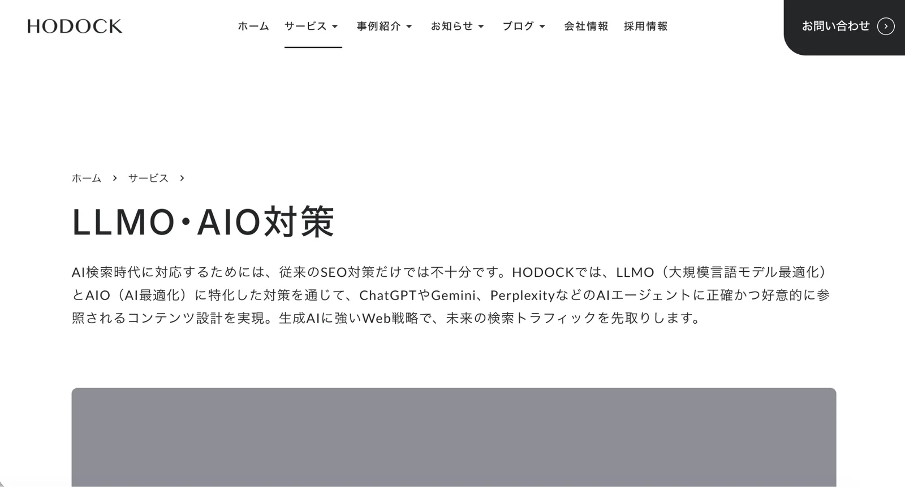
ホドック株式会社は、福岡のWEBマーケティング会社として、LLMO・AIO対策の専用ページを公開している会社です。デザインとデジタルマーケティングの両方を見ながら相談しやすく、単なる記事追加ではなく、サイト全体の見せ方や体験設計まで含めて整えたい会社に向いています。
ブランド表現と集客設計を切り分けたくない会社や、AIに正しく伝わるだけでなく、人が見てもわかりやすいサイトへ整えたい会社にとって、制作と運用を一体で相談しやすいタイプの支援先です。
4. 株式会社LIH
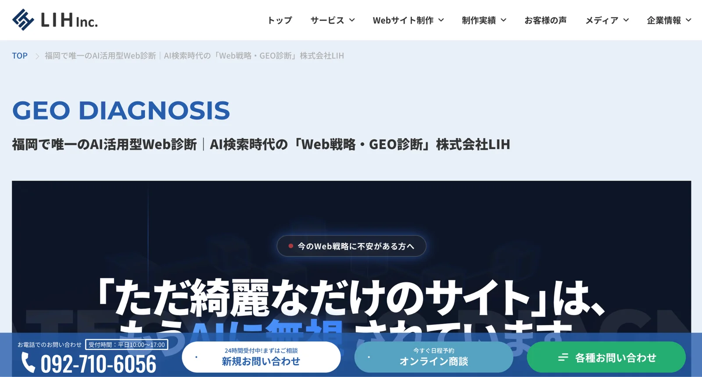
株式会社LIHは、福岡で唯一のAI活用型Web診断として「Web戦略・GEO診断」を打ち出している会社です。大規模なリニューアルを前提にするのではなく、今のWebサイトがAIからどう見えているかを診断し、改善の優先順位を整理する方向で支援している点が特徴です。
特に、いきなり高額な伴走契約に入る前に、現状把握から小さく始めたい会社には相性がよいでしょう。福岡の中小企業や少人数のマーケティング体制でも入りやすい導入手段を探しているなら、候補に入れやすい会社です。
5. メディアクロス株式会社
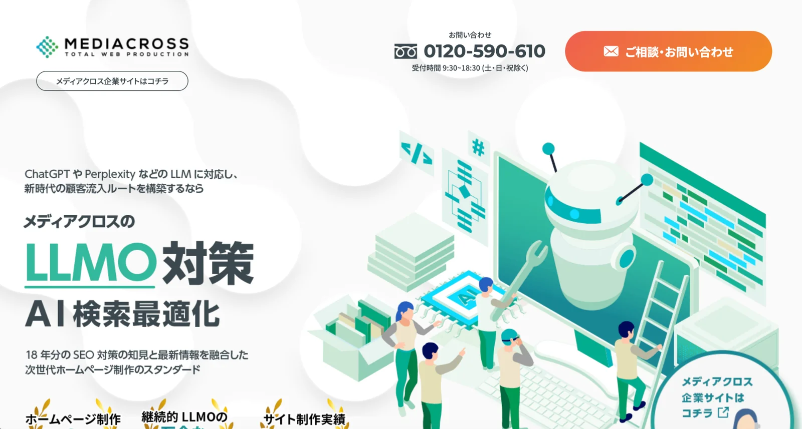
メディアクロス株式会社は、福岡のホームページ制作とSEO対策を長く手掛けてきた会社で、近年はLLMO対策にも対応しています。公式ページでも、ホームページ制作、SEO対策、LLMO対策を並べて案内しており、コンテンツだけでなくサイト品質そのものを整えたい会社に向いていることがわかります。
ホームページの構造、情報の並び方、AIが引用しやすい見せ方まで含めて見直したい福岡企業にとって、制作会社寄りの発想で進めやすい支援先です。既存サイトの品質課題を放置せず、土台から整えたい会社に合います。
参考：メディアクロス株式会社｜福岡ホームページ制作・SEO対策・LLMO対策
6. 株式会社セブンアイズ
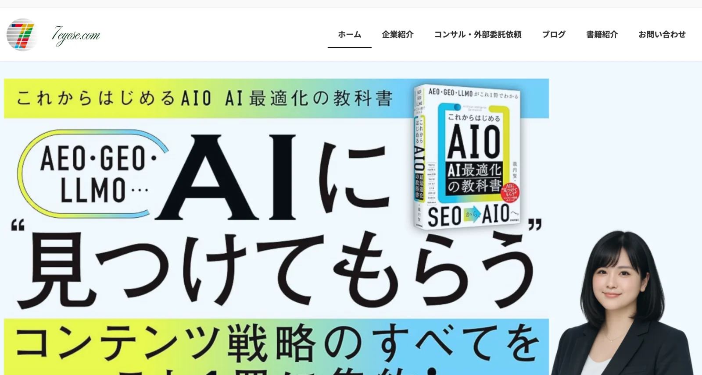
株式会社セブンアイズは、AIO・LLMO対策を前面に出している会社で、FAQ、構造、ソースの読みやすさといった技術寄りの改善を重視しています。見た目のデザインよりも、AIが読み取りやすい裏側の整理を得意としているため、コーディングや構造面の整備まで踏み込みたい会社に向いています。
福岡の会社の中でも、制作のきれいさだけでなく、AIが理解しやすい設計に寄せたい会社や、FAQや定義ページの整備を本格的に進めたい会社にとって、比較しやすい選択肢です。
参考：株式会社セブンアイズ｜AIO・LLMO対策のご依頼なら(株)セブンアイズ
7. ウェブココル株式会社
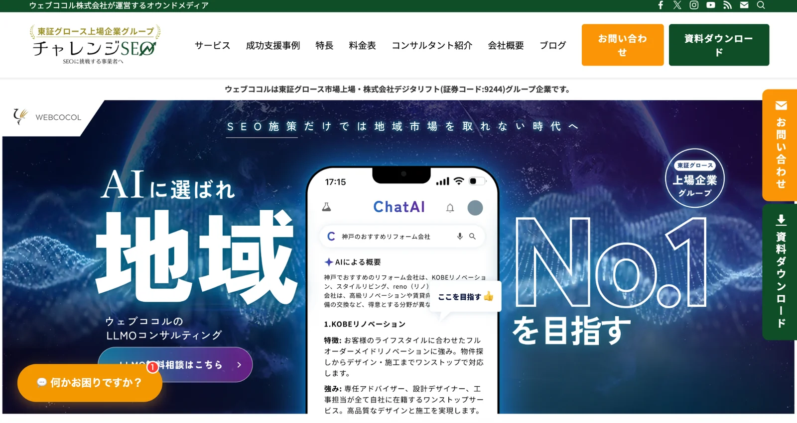
ウェブココル株式会社は、「地域を制するLLMOコンサルティング」を掲げている会社です。地域キーワードのSEOで培った強みをもとに、AIに選ばれる地域ブランドづくりを前提に支援しており、福岡県内の地域集客や店舗型ビジネスと特に相性がよいです。
福岡市内の店舗、地域名で比較されやすいサービス、ローカルでの第一想起を狙いたい会社にとっては、単なる全国一律のAI対策よりも、地域文脈に落とし込みやすい支援を受けやすい会社です。
参考：ウェブココル株式会社｜地域を制するLLMOコンサルティング
8. 福岡ECサイト株式会社
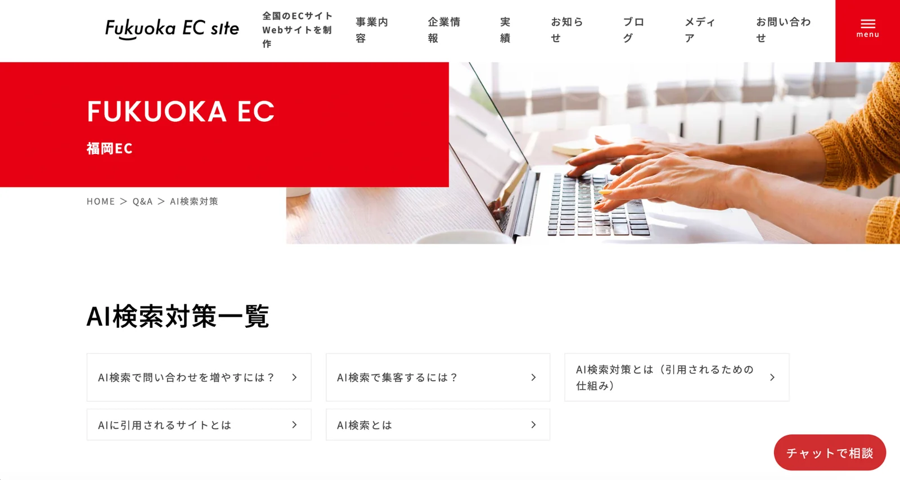
福岡ECサイト株式会社は、ECサイト制作とECコンサルティングを基盤に、AI検索対策も強みとして打ち出している会社です。公式サイトでもAI検索対策のQ&Aページを用意しており、ECの売れる導線とAI検索の見え方をまとめて整えたい会社に向いています。
物販、通販、Shopify運用のように商品ページと比較記事の両方が重要な事業では、一般的なLLMO会社よりもEC文脈を理解した支援のほうが噛み合いやすいです。福岡でECを伸ばしたい会社には特に検討しやすい存在です。
9. 株式会社メディアリーチ
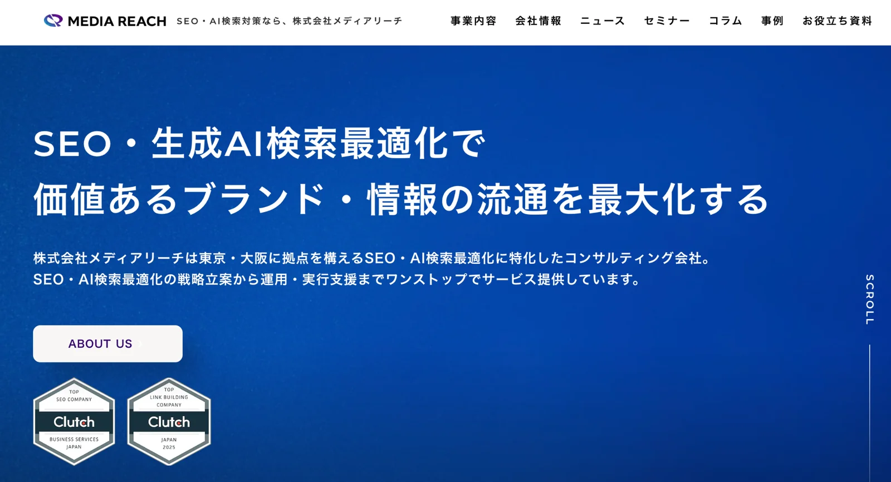
株式会社メディアリーチは、大阪・東京を拠点にSEOとLLMOを専門的に支援している会社です。公式ページでは、スポット診断、月額型コンサルティング、記事制作、研修、リニューアル時のLLMO対策まで案内しており、支援メニューの明確さと専門性が強みです。
福岡本社の会社ではありませんが、BtoB、SaaS、専門サービスのように比較検討型の商材で本格的にAI検索対策を進めたい会社にとっては、有力な全国対応の候補です。地域性だけでなく、支援の厚みを優先したい会社に向いています。
参考：株式会社メディアリーチ｜LLMOコンサルティング（GEO/AIO）
10. 株式会社ジオコード
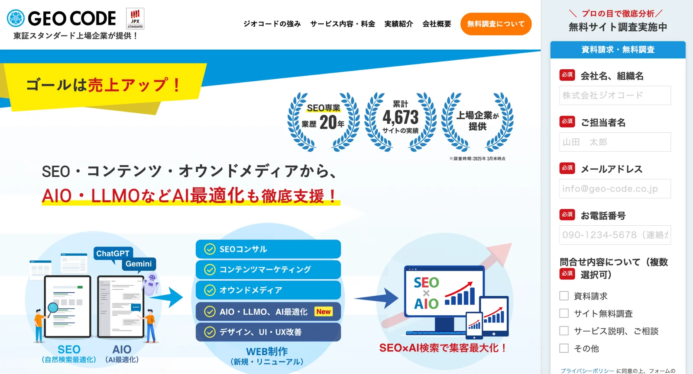
株式会社ジオコードは、SEO対策を中心に、AIO、LLMOなどAI最適化まで案内している上場企業です。公式サイトでは、SEOに加えてWeb制作、UI/UX改善、コンテンツ運用まで支援範囲が広く、戦略提案だけで終わらず実装までつなげやすいことが特徴です。
地場特化型の会社とは違って、組織体制や支援メニューの厚みを重視して比較しやすく、制作、広告、SEO、AI最適化を横断して相談したい会社や、一定規模以上の支援体制を求める会社に候補入りしやすいでしょう。
参考：株式会社ジオコード｜SEO対策・AIO・LLMOなどAI最適化も徹底支援
地域比較も含めて見たい方は東京のLLMO対策会社10選や大阪のLLMO対策会社10選、会社比較の判断軸を確認したい方はLLMO対策会社の比較記事も参考になります。
福岡のLLMO会社を比較する際のポイント
福岡でLLMO会社を比較するときは、会社の知名度や料金だけで決めないことが大切です。福岡市はスタートアップ支援や都市型集客の文脈が強い一方で、北九州では製造業や物流、医療・福祉の存在感が大きく、さらに県内広域では観光や来訪型ビジネスも強く動きます。
つまり、同じ福岡県内でも、AIに聞かれやすい質問や引用されやすい情報設計の方向性はかなり変わります。地域名を入れ替えるだけの提案ではなく、商圏ごとの質問文脈まで設計できる会社かを見ることが重要です。
福岡市・天神・博多の都市型集客に強いか
福岡市は創業支援やスタートアップ支援の動きが強く、新しいサービスや比較検討系のニーズが生まれやすいエリアです。そのため、福岡市内で集客する企業は、単に会社情報を載せるだけでなく、「どんな課題を持つ人に、どんな選択肢として比較されるか」まで設計する必要があります。
特に天神、博多のような都市部では競合も多く、AIに「福岡でおすすめは？」「博多で頼むなら？」と聞かれる前提で情報を整えることが重要です。都市型の比較導線に強い会社かどうかは、福岡版のLLMOでは最初に見るべきポイントです。
北九州の製造業・医療福祉・物流の商圏を理解しているか
福岡県内の集客を考えるとき、福岡市だけを前提にするとズレることがあります。北九州市は製造業の比重が大きく、医療・福祉、卸売・小売なども存在感がある地域です。さらに物流拠点としての役割も強く、都市型サービスとは違う情報ニーズが生まれやすい特徴があります。
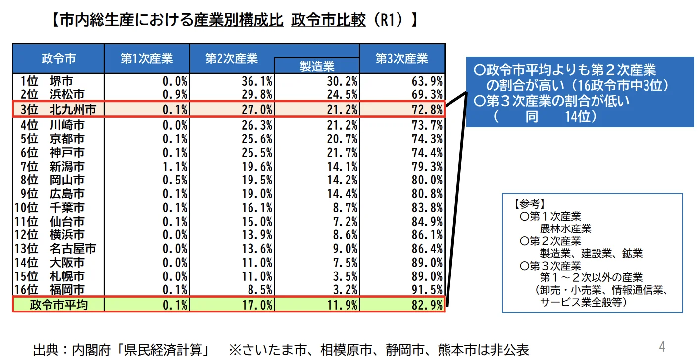
このような地域では、店舗集客向けの見せ方だけでは不十分です。製品の強み、対応領域、導入メリット、法人向けの比較軸などを整理し、AIに参照されやすい構成をつくれる会社かを確認したほうがよいでしょう。北九州を含めた県内全体の産業構造まで理解しているかで提案の解像度は大きく変わります。
観光・宿泊・店舗型ビジネスの導線を設計できるか
福岡は、ビジネス需要だけでなく、観光、宿泊、飲食、商業施設などの来訪型ビジネスが動きやすい地域でもあります。このタイプの業種では、AIに引用されるための情報も、BtoB企業とは少し変わります。エリア情報、選ばれる理由、利用シーン、価格帯、アクセス、よくある質問を整理する必要があります。
観光・店舗・宿泊系の導線を理解したうえで、ページ改善やコンテンツ制作まで落とし込める会社かを見ておくことが大切です。「福岡でおすすめ」「博多駅周辺で比較したい」と聞かれる前提で設計できるかが差になります。
参考：福岡市｜福岡市の観光・MICE 2024年版（福岡市観光統計）
参考：福岡県｜令和6年度「モバイル空間統計」を活用した観光客の来訪・宿泊や周遊の状況調査の結果について
県内広域や九州商圏まで見据えて提案できるか
福岡でLLMO会社を選ぶときは、地域名を一つ入れ替えるだけの施策ではなく、商圏ごとの質問設計やページ設計に対応できるかを確認したほうが安全です。福岡県内向けの導線と、九州全域向けの導線では、AIが拾いやすい情報の整理の仕方も変わるためです。
福岡の企業の中には、福岡市内だけでなく、久留米、筑後、北九州を含めた県内広域や、九州全体を商圏としている会社も少なくありません。複数の商圏をどう分けて見せるかまで考えられる会社のほうが、AIにも人にも伝わる構造を作りやすいでしょう。
スタートアップや中小企業でも続けやすい支援体制か
福岡では、創業直後の企業や少人数の会社でも、AI検索対策に取り組みたいというニーズが出やすいです。ただし、LLMOは一度だけ整えて終わる施策ではなく、質問の洗い出し、既存ページの見直し、FAQ整備、記事追加など、少しずつ改善を続ける前提で考えたほうが成果につながりやすくなります。
そのため、支援会社を選ぶときは、最初から大きな予算を前提にしていないか、段階的に始められるか、社内で運用しやすい形に落としてくれるかを見ておくことが大切です。理論だけでなく、続けられる運用設計まで支援してくれるかを確認しましょう。
制作や改善まで一気通貫で任せられるか
LLMOは、戦略資料を作って終わると成果につながりにくい施策です。AIに引用されやすい質問設計ができても、それを既存ページの改善、記事制作、比較コンテンツ、FAQ整備に落とし込めなければ、実際の露出や流入には結びつきにくくなります。
特に福岡のように、都市型集客、観光導線、BtoB、地域密着型ビジネスが混在するエリアでは、実装力の差がそのまま結果の差になりやすいです。会社選びでは、診断や提案だけでなく、その後の制作や改善まで一気通貫で対応できるかを必ず確認しておくべきです。支援範囲の見方を整理したい方はサービスページや会社概要もあわせて確認しておくと判断しやすくなります。
福岡のLLMO会社に依頼する費用相場
福岡でLLMO会社に依頼する場合、費用はかなり幅があります。理由は、簡易診断だけを提供する会社もあれば、戦略設計、ページ改善、記事制作、モニタリングまで含めて伴走する会社もあるためです。同じ「LLMO対策」という言葉でも、どこまで支援してくれるかで料金の意味は変わります。
そのため、金額だけを見て高い、安いを判断するのではなく、診断だけなのか、継続支援なのか、制作まで含まれるのかを分けて確認することが大切です。ここでは2026年4月15日時点の公開情報をもとに、福岡で依頼する際の費用感を整理します。
| 支援タイプ | 目安 | 主な内容 |
|---|---|---|
| スポット診断 | 3万円台〜30万円前後 | 現状把握、課題整理、改善方針の提示 |
| 月額伴走 | 10万円台後半〜30万円前後 | 戦略設計、改善提案、定例、運用支援 |
| 記事制作 | 1本10万円前後〜 | LLMOを踏まえた構成設計と記事制作 |
| 制作・改修込み | 10万円台〜50万円以上 | サイト改修、FAQ整備、リニューアル支援 |
福岡ではスポット診断なら3万円台〜30万円前後から見つかる
福岡では、まず現状把握から始めたい企業向けに、比較的低価格の診断メニューを用意している会社があります。たとえば株式会社LIHは、AI活用型のWeb診断ページで33,000円の価格を公開しています。一方で、全国対応の専門会社では、スポット診断を30万円から案内している例もあります。
つまり、診断といっても内容には大きな差があります。軽い現状把握なのか、競合分析や改善方針の策定まで入るのかで金額は変わるため、まずは何を知りたいのかを明確にして選ぶことが大切です。
継続伴走の相場は10万円台後半〜30万円前後が目安
継続的にLLMOへ取り組む場合は、月額型の支援が中心になります。公開情報を見ると、地域LLMOを打ち出す会社から専門会社まで幅があり、本格的な伴走は10万円台後半〜30万円前後をひとつの目安として見ておくと比較しやすいです。
特に専門会社では、株式会社メディアリーチが月額30万円（税込33万円）からのLLMOコンサルティングを案内しています。福岡で依頼先を考えるときも、月額だけでなく、戦略設計、改善実務、モニタリングまでどこまで含まれるかを見たほうが判断しやすくなります。
参考：ウェブココル株式会社｜地域を制するLLMOコンサルティング
参考：株式会社メディアリーチ｜LLMOコンサルティング 料金
記事制作や実装を含めると10万円台〜50万円以上まで広がる
LLMOを本格的に進める場合は、既存ページの見直しだけでなく、FAQ追加、CMS改修、比較記事制作、リニューアル対応まで必要になることがあります。この段階になると、単なるコンサル料金ではなく、制作や実装の費用も加わるため、予算は一気に上がりやすくなります。
たとえば、メディアクロス株式会社は1サイト基本料金10万円の表記があり、株式会社メディアリーチではサイトリニューアル時のLLMO対策を50万円から案内しています。制作を含めるかどうかで、費用の見え方は大きく変わると考えたほうが現実的です。
参考：株式会社メディアリーチ｜サイトリニューアル時のLLMO対策 料金
福岡で費用を見るときは地場理解と実装範囲を必ず確認する
同じ10万円でも、福岡市内の都市型比較導線を整える支援と、北九州の製造業向けに情報設計を作り直す支援では、やることの重さが違います。観光、店舗型、BtoB、ECなど、どの商圏でどの質問に答えるかによって必要な作業量は変わるためです。
そのため、費用を見るときは、価格そのものよりも、どの商圏理解が含まれているか、改善実務まで入るかを確認することが大切です。安いか高いかだけで判断すると、必要な支援が抜けたまま契約しやすくなります。
福岡のLLMO費用は小さく始める会社と本格伴走を求める会社で分かれやすい
福岡では、まず診断や小規模改善から入りたい会社と、比較記事、FAQ、サイト改修までまとめて進めたい会社で、選ぶプランが分かれやすいです。最初から大きな投資をする必要はありませんが、競争の強い商圏では、一定以上の実装が必要になることも珍しくありません。
自社の現状に合わせて、診断から始めるのか、伴走型で進めるのかを切り分けたうえで比較すると、失敗しにくくなります。価格帯をさらに広く見たい方はLLMO対策会社の比較記事も参考になります。
福岡のLLMO会社に関するよくある質問
福岡でLLMO会社を検討している企業の多くは、料金だけでなく「本当に意味があるのか」「SEOと何が違うのか」「地元会社に頼む必要があるのか」といった部分で迷いやすいです。LLMOは新しい言葉ですが、やること自体は難解なものではなく、AIに引用されやすい情報の出し方と、比較されやすい導線づくりを整える施策と考えると理解しやすくなります。
ここでは、福岡の企業が依頼前に気になりやすい疑問を、実務ベースで整理します。
福岡のLLMO会社に依頼する意味はありますか？
あります。いまはGoogle検索でもAI Overviewsが表示される場面が増えており、ChatGPTでもウェブ検索を使って情報を探す導線が広がっています。そのため、従来の検索結果だけでなく、AIに要約、比較される前提で情報を整える意味は以前より大きくなっています。
特に福岡のように、地域名と業種名で比較されやすい市場では、AIに拾われやすい質問や導線を先回りして整えておく価値があります。単にアクセス数を増やすというより、比較候補に入る確率を上げる施策として考えるとわかりやすいでしょう。
福岡本社のLLMO会社でないと意味はありませんか？
必ずしも福岡本社である必要はありません。全国対応の会社でも、LLMOの実績や支援範囲が明確で、福岡の商圏や業種特性を踏まえて提案できるなら十分候補になります。実際、AI検索対策を専門的にサービス化している会社は東京や大阪にも多くあります。
ただし、福岡市の都市型集客や、北九州を含む県内商圏、観光、店舗導線のような地域性を理解していないと、提案が全国一律になりやすいです。大切なのは所在地そのものより、福岡の文脈に合わせて設計できるかどうかです。
福岡の中小企業やスタートアップでもLLMOに取り組む意味はありますか？
十分あります。むしろ、大手ほど広告予算をかけにくい中小企業やスタートアップほど、比較検討の初期段階で見つけてもらえる設計を持つことは重要です。福岡は創業支援や新規事業の動きも活発なので、早い段階から情報設計を整える会社ほど差がつきやすくなります。
また、LLMOは必ずしも大きな予算から始める必要はありません。自社の強みが伝わるページ、よくある質問、比較されるポイントを整理するだけでも、土台づくりとしては十分意味があります。小さく始めて改善を積み重ねる考え方と相性のよい施策です。
福岡の製造業や物流系企業でもLLMOは効果がありますか？
あります。製造業や物流系の企業は、一般消費者向けの派手な集客よりも、法人比較や導入検討の文脈で見られることが多いです。そのため、対応範囲、技術力、納期、対応エリア、実績の見せ方を整理しておくと、AIに参照されやすくなります。
特に北九州を含むエリアでは、製造業や物流の存在感が大きいため、店舗型集客とは違う文脈で質問される前提に立てる会社を選ぶと、LLMOの効果を出しやすくなります。
福岡の観光・店舗型ビジネスでもLLMOは効果がありますか？
あります。観光、宿泊、飲食、来店型サービスでは、AIに「福岡でおすすめは？」「博多駅周辺で選ぶなら？」のように聞かれる場面が増えやすく、エリア性と比較性が強く出ます。このとき、特徴、利用シーン、価格帯、アクセス、FAQが整理されていると、比較候補として扱われやすくなります。
特に福岡は観光や来訪需要が大きいので、地域名を含む比較導線との相性がよいです。検索順位だけを見るのではなく、AIに要点を拾われやすい情報の置き方まで含めて整える意味があります。
SEO会社とLLMO会社は何が違いますか？
大きな違いは、見る対象です。SEO会社は主に検索結果で上位表示を狙うための改善を中心に考えますが、LLMO会社はそれに加えて、AIにどう解釈され、どう要約され、どの比較文脈で取り上げられるかまで見て設計します。
もちろん、実務ではSEOとLLMOは完全に別物ではありません。土台になるのは、分かりやすい情報設計、適切な見出し、FAQ、実績、構造化された情報です。ただし、LLMOでは「AIが拾いやすい形にする」という視点がより強く入ります。
福岡のLLMO会社に依頼したら、どれくらいで成果が出ますか？
数週間で劇的に変わる施策ではありません。まずは質問設計、既存ページの改善、FAQ追加、比較ページの整備などを進め、その後にAI上での出現や引用の変化を見ていく流れになります。既存サイトの状態や業種によって差はありますが、短期で断言できるものではないと考えたほうが自然です。
そのため、依頼前には「何を成果とみなすのか」を決めておくことが大切です。検索順位だけでなく、AI上での言及、比較候補への入り方、問い合わせにつながる導線改善まで含めて見ると、LLMOの評価はしやすくなります。
福岡のLLMO会社を選ぶときは何を確認すればよいですか？
まず確認したいのは、福岡の商圏や業種特性を理解しているか、そして診断だけでなく制作や改善まで対応できるかです。特に福岡では、福岡市の都市型集客、北九州の産業型集客、観光、店舗型導線が混在するため、地域理解が浅いと提案が抽象的になりやすいです。
そのうえで、支援範囲、費用、契約期間、成果の見方を事前に確認すると失敗しにくくなります。会社名や価格だけで選ぶのではなく、自社がどの商圏で、どんな比較文脈に入るべきかまで一緒に考えてくれるかを見ることが大切です。
| 確認ポイント | 見たい内容 |
|---|---|
| 商圏理解 | 福岡市、北九州、県内広域の違いを踏まえて提案できるか |
| AI検索への対応 | AI Overviewsや対話型AIまで視野に入れているか |
| 改善実行力 | 診断後に記事制作、FAQ整備、改修まで進められるか |
| 料金と契約 | 月額内に何が含まれるか、追加費用はどこからか |
福岡県でLLMO会社を選ぶなら、福岡市の都市型集客と北九州の製造・物流商圏を分けて考えましょう
福岡でLLMO会社を選ぶときは、単にAI検索対策に対応しているかだけでなく、福岡市の都市型集客、北九州の産業構造、観光、店舗導線のような地域特性まで踏まえて提案できるかを確認することが大切です。福岡はエリアごとに商圏や質問文脈がかなり変わるため、地域理解の浅い施策では成果につながりにくくなります。
また、LLMOは診断だけで完結するものではなく、質問設計、既存ページ改善、FAQ整備、記事制作までつながってはじめて強くなります。福岡で依頼先を探す際は、地場理解と実装力の両方を持つ会社かどうかを軸に比較していくのがおすすめです。
判断軸をもう少し広く見たい方は東京の比較記事、大阪の比較記事、BtoB向けLLMO会社の比較記事もあわせて確認してみてください。